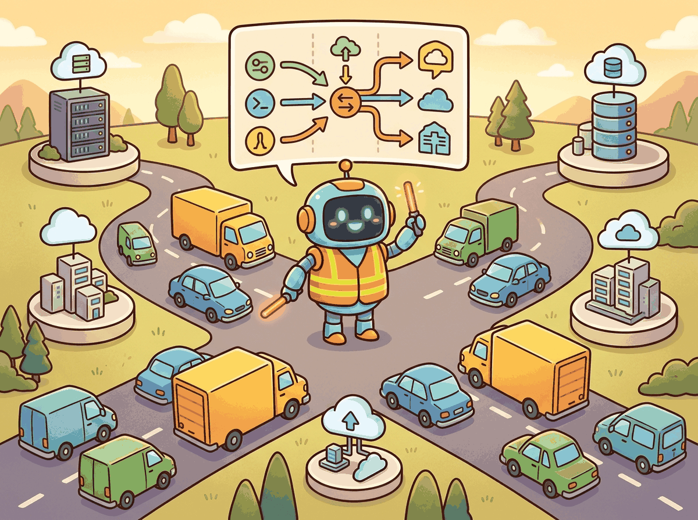

The best model for a task is rarely the most expensive one. It is the cheapest one that meets your quality bar.
Deploy, Gateway-Guarding AI Agent
As LLM applications grow beyond a single model and provider, the complexity of managing API keys, retry logic, rate limits, and cost tracking across services becomes unsustainable without a centralized abstraction. AI gateways solve this by placing a proxy layer between your application and LLM providers, handling routing, fallbacks, caching, and observability in one place. This section makes the case for the gateway layer, sketches its architecture, and (just as importantly) names the situations where you should not introduce one. The mechanics of routing, rate limiting, caching, and cost enforcement are taken up in Section 63.2 and Section 63.3.
Prerequisites
This section builds on the scaling patterns in Section 62.1, the LLM API mechanics in Section 11.1, and the error-recovery patterns from Section 49.4. Application-architecture and deployment patterns are revisited in detail later in the book.

63.1.1 Why a Gateway
The deepest benefit of an AI gateway is not the bytes it moves but the contract it imposes between application code and the model market. Once your code calls gateway/v1/chat/completions instead of api.openai.com/v1/chat/completions, the gateway becomes the place where every model-market change (new pricing, deprecated endpoint, fresh provider, rotating key, regional outage) is absorbed without a rebuild. The application code freezes at one API; the gateway thaws and refreezes around it. Everything else in this chapter (fallback chains, semantic caches, budget enforcement) is a benefit that follows from owning that contract.
What an AI Gateway Solves
As LLM applications grow in complexity, organizations find themselves managing API keys for multiple providers, implementing retry logic in every service, duplicating rate limiting code across teams, and struggling to track costs across projects. An AI gateway solves these problems by introducing a centralized proxy layer between your application code and LLM providers. All model requests flow through the gateway, which handles routing, fallbacks, rate limiting, cost tracking, caching, and observability in a single place.
Why LLM Traffic Is Not REST
The AI gateway pattern mirrors the traditional API gateway pattern (Kong, Envoy, AWS API Gateway) but is specialized for the unique characteristics of LLM traffic. LLM requests are long-lived (seconds, not milliseconds), token-based rather than request-based for billing, and require streaming support. LLM responses are non-deterministic, making caching strategies different from traditional API caching. The gateway must understand these characteristics to provide meaningful routing, load balancing, and cost management.
The most important benefit of an AI gateway is provider independence. When your application code calls gateway/v1/chat/completions instead of api.openai.com/v1/chat/completions, switching from GPT-4o to Claude Sonnet or Gemini becomes a configuration change, not a code change. This decoupling is critical for cost optimization (routing to the cheapest adequate model), reliability (automatic failover when a provider has an outage), and compliance (routing sensitive data to specific providers or regions). The model landscape in Chapter 7 changes rapidly; your gateway absorbs that volatility.
One fintech startup discovered that 30% of their LLM API spend went to a single user who had figured out how to use the internal chatbot as a free homework tutor for his kids. The gateway's per-user cost attribution dashboard revealed the pattern within a day. Without a gateway, it took the team three months to notice the anomaly buried in aggregate billing.
63.1.2 Architecture Overview
At the architectural level, an AI gateway is a stateless HTTP proxy that speaks an OpenAI-compatible API on the south side (toward application code) and a polyglot mix of provider APIs on the north side (toward OpenAI, Anthropic, Google, Azure, self-hosted vLLM, and so on). Around that proxy sits a control plane: a small relational database for virtual keys, budgets, and audit logs; a fast key-value store (typically Redis) for token-bucket counters and the semantic cache index; and a metrics pipeline that emits per-request rows to OpenTelemetry or a time-series database.
The data plane is deliberately thin. A request arrives, the gateway resolves the logical model name to a deployment, checks rate limits and budget, forwards the request, streams the response back, and records the spend. Everything more interesting (cache lookups, fallback chains, learned routing) is implemented as middleware in front of or behind the forward step. This layered design is what lets the same gateway binary do nothing for one team (a transparent proxy) and almost everything for another (cost-aware routing with semantic cache and three-tier failover).
The deployment topology matters more than most teams expect. A gateway co-located with the application (same Kubernetes node, same availability zone) adds 1 to 5 ms of overhead, negligible against 500 ms to 10 s of LLM latency. A gateway deployed across a region boundary adds 30 to 80 ms and breaks the cost argument for very short-prompt traffic. The default deployment pattern is a small fleet of gateway pods (3 to 5 replicas) behind a service-mesh load balancer, sharing a Redis cluster for rate-limit and cache state. The pods themselves are stateless and roll cleanly during deploys.
The Five Responsibilities
Every production AI gateway, regardless of vendor, handles five concerns. Routing decides which deployment serves a request (covered in Section 63.2). Reliability covers retries, fallbacks, and health-based deployment exclusion. Throttling enforces RPM, TPM, and budget limits per virtual key. Caching deduplicates traffic (semantic and exact, treated in Section 63.3). Observability emits structured telemetry per request: model, provider, tokens, latency, cache hit, virtual key, downstream user. Any gateway missing one of these five is incomplete; any gateway claiming to do more (RAG, agent orchestration, content moderation as a first-class concern) has wandered out of the gateway category and into the application layer.
63.1.3 When NOT to Use a Gateway
Gateways are not free. They add a hop, a dependency, an operational surface, and a place for outages to originate. The honest answer to "should we run a gateway?" is "not yet" more often than vendor marketing admits. Three patterns mark the genuine no-gateway zone.
Single-provider edge deployments where latency is the headline metric. Voice assistants, real-time co-pilots, and IDE inline completions live in the 100 to 300 ms budget where every gateway hop is measurable. If your application calls only one provider, retries only once, and never needs cost attribution at the per-team level, the gateway is a tax with no offsetting benefit. Call the provider directly, instrument with OpenTelemetry, and revisit the question when you add a second provider or a second team.
Prototype and pre-product stages. A gateway shines when many teams share one provider account, or when many providers fan out from one application. Neither situation applies to a two-engineer prototype with one API key. Standing up LiteLLM Proxy, Redis, and a Postgres ledger before you have ten paying users is premature optimization; it slows iteration without addressing any current pain. The standard rule: introduce a gateway the week the third team asks for its own budget, not the week the architecture diagram first sketches one.
Compliance regimes where the gateway is itself a regulated boundary. Some healthcare, defense, and financial-services deployments require that customer data never traverses a shared infrastructure component, including a shared gateway. In those environments a single-tenant direct integration with the provider is the correct architecture; a multi-tenant gateway would itself need the same compliance posture, which usually negates the operational simplification it was supposed to provide.
The gateway pod is stateless and trivial to scale. The Redis cluster holding token-bucket counters and the semantic cache is not, and the Postgres ledger holding virtual keys and spend transactions is even less so. When you adopt a gateway you adopt a data tier you must back up, restore, monitor, and version-control. The most common production failure is not the gateway crashing, it is the Redis cluster running out of memory at 3 a.m. and every rate limit briefly going to zero or to infinity, depending on the failure mode. Treat the gateway's state stores with the same operational seriousness as any other production database.
- An AI gateway is a contract, not just a proxy. The win is freezing application code against an OpenAI-compatible API while the model market churns behind the gateway.
- LLM traffic is not REST traffic. Long-lived, streaming, token-priced, non-deterministic. A gateway that does not model these specifically is a generic API gateway in disguise.
- The five gateway responsibilities are routing, reliability, throttling, caching, and observability. Anything else is application-layer concern leaking into the gateway.
- Gateways have a no-gateway zone: latency-critical single-provider edge deployments, prototypes, and single-tenant compliance boundaries. The right time to introduce a gateway is when the third team asks for its own budget.
- The gateway data tier is the real operational risk. The proxy is stateless. The Redis cluster and Postgres ledger behind it are not, and they are where most gateway outages originate.
Section 63.2: Routing and Reliability covers the LiteLLM Proxy, fallback chains, rate limiting, and the commercial gateways (OpenRouter, Portkey, Cloudflare AI Gateway) that share or extend these patterns. Section 63.3: Caching and Cost Management then turns to semantic caching, budget enforcement, and model-version pinning across vendors.
For the API-engineering patterns (retries, streaming, structured output) the gateway sits in front of, see Section 11.3: API Engineering Best Practices. For traditional API gateway patterns, the Kong and Envoy literature is the obvious antecedent; the AI gateway pattern reuses about 70% of it.